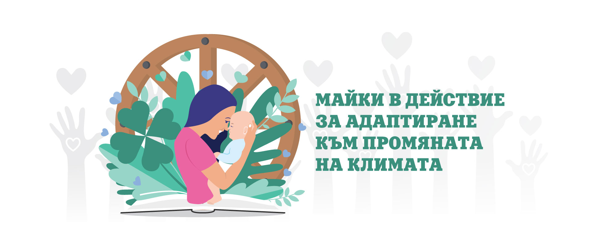
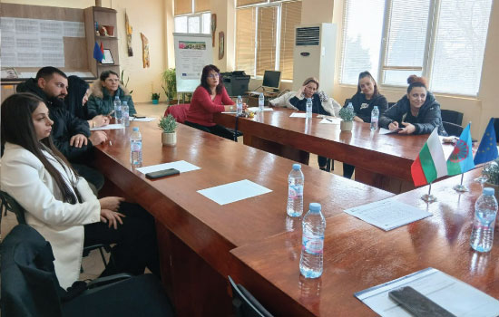
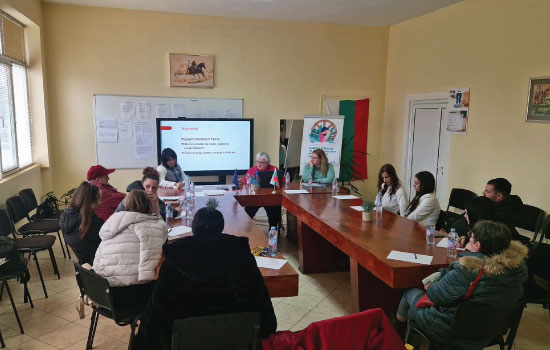
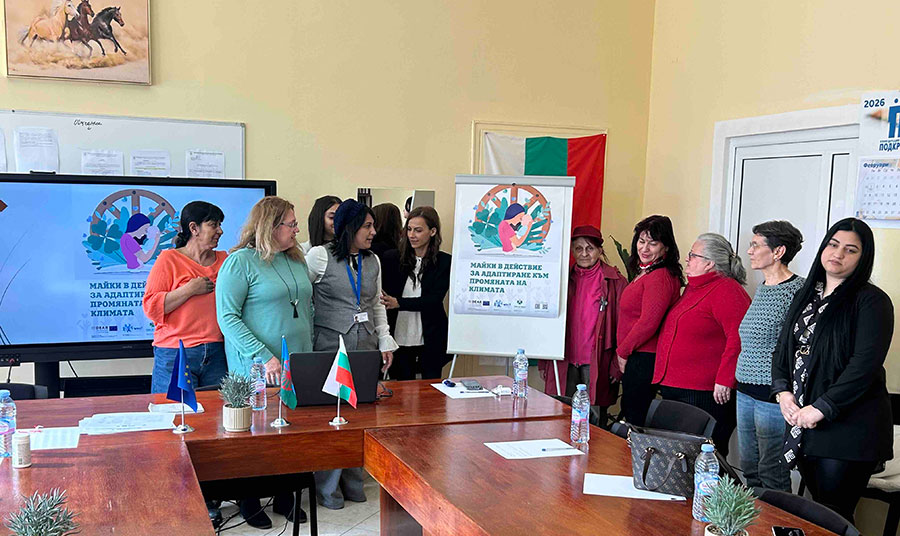
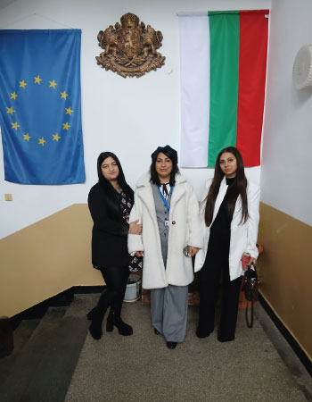
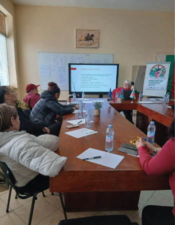

Сдружение „Ръка за ръка 8“ е инициирано от амбициозен елит от млади ромски жени, които действат като агенти на промяната и модели за подражание за успешната интеграция на ромското малцинство в българското общество.
Сдружението е регистрирано през 2024 г. с цел да работи за развитието и утвърждаването на гражданското общество чрез социално и неформално образование; да подкрепя личната реализация и изява на жените и младите хора и социалната интеграция в неравностойна социална и културна ситуация; да подкрепя дейности, свързани с опазването на природата и околната среда; да улеснява интеграцията на ромските жени и млади хора в обществото, и др.
Сдружението се стреми да се позиционира като фокусна точка на Европейския ромски съюз в България, особено след като аз бях избрана за вицепрезидент на Международен ромски съюз с мандат, свързан с развитието на жените и младежта. Заради активността си и социалната ми позиция, през 2023 г. бях номинирана от политическа партия „Солидарна България“ за кандидат за народен представител.



Разговорите и действията по отношение на изменението на климата често не успяват да обърнат необходимото внимание на отговорността на човечеството и на всеки отделен човек за адаптацията към промяна на климата. Липсата на чувствителност и знания е още по-важна за маргинализираните групи от населението с по-ниско образование и по-ниска социална ангажираност, какъвто е случаят на българските роми. Ромските момичета често напускат училище в ранните си тийнейджърски години, за да станат майки на големи семейства.
От друга страна, значителен процент от малцинствата продължават да следват традиционния начин на живот и да живеят близо до природата, възползвайки се от безплатни екологични ресурси, като по този начин често провокират общественото мнение, което ги обвинява за деградацията на природни ресурси, диви животни и растения чрез бракониерство, горски пожари, незаконна сеч, разхищение на водни ресурси и електроенергия.


Проектът си поставя за цел да повиши осведомеността и включването на бързо нарастващата група от маргинализирани ромски жени и младежи в действия за адаптиране към промяната на климата. Проектът използва традиционния ромски начин на живот като отправна точка, както и техните познания за природосъобразни решения, ръка за ръка с техните връстници от българската етническа общност.
Друга цел на проекта е да насърчим междусекторното обогатяване в опит да се подкрепят усилията на амбициозен елит от млади ромски жени да действат като агенти на промяната и модели за подражание за успешна интеграция и развитие на лидерство в адаптацията към промяната на климата и климатичната справедливост, области, в които ромите, бидейки близо до природата, притежават собствени знания, които другите българи са загубили.


Проектът предвижда организиране на семинар, през февруари 2026, за повишаване осведомеността на майки и техните малки деца относно промяната на климата и адаптацията към него, включително промяната на начина на живот. Поне 70% от обучените майки ще са от ромски произход. През април 2026, ще инициираме кръгла маса, на която ще представят традиционните знания и практики на ромите относно адаптацията към промяната на климата и природосъобразните решения пред социалните партньори, за да се сподели опит и да се насърчат да разпространяват методологията разработена от проекта за повишаване на осведомеността и включване на ромите в различни сектори на обществото. И разбира се, проектът цели да укрепи административния капацитет и да подобри разпознаваемостта на сдружение „Ръка за ръка 8“ сред социалните партньори и техните групи от бенефициенти. Разработваме уебстраница, профили в социалните мрежи, YouTube и др.